Case 012026Abu Dhabi DGE
WakeelAI decisions matched to the weight of each approval
A mobile app where AI reads the approvals and requests that reach a senior decision-maker first, and attaches a recommendation. So that the busiest person in the organisation can trust AI with approvals that cannot be undone, I lead its experience design. I decided that each approval opens to the depth its weight deserves, that every action waits five seconds with undo in reach, and that Wakeel has one face, an orb in eight states, on every screen. What a review settles goes to the development team as documents they can build from directly.
- Role
- Product Experience Lead. UX, presence, prototypes, developer handoff
- Period
- Since August 2026, ongoing
- Integrations
- Oracle ERP approvals, Outlook decision requests
- Way of working
- Design hub, options on real app code, refinement through comments, developer handoff
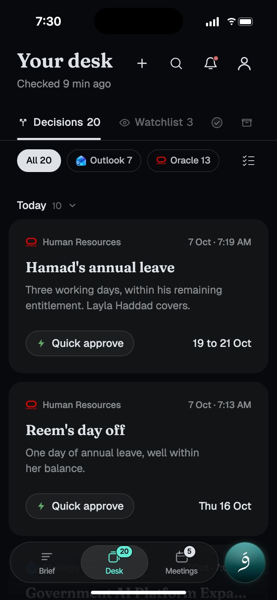
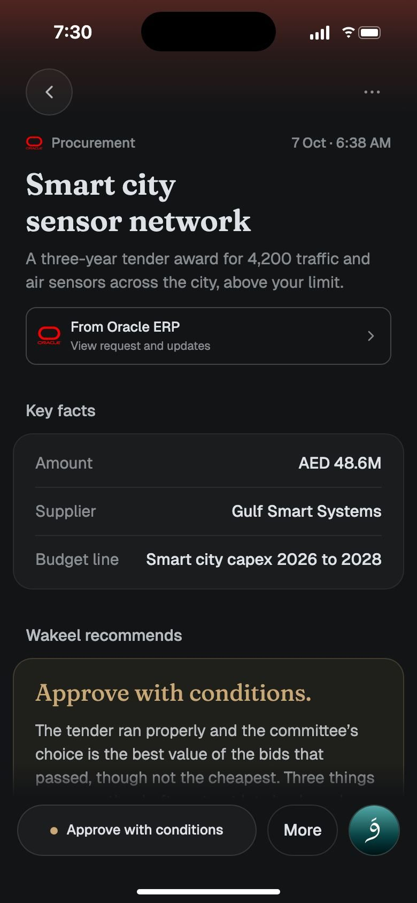
About the project
Wakeel is an AI decision app at the Abu Dhabi Government's Department of Government Enablement (DGE). It gathers Oracle ERP approvals and decision requests from Outlook on one desk, reads the evidence behind each request, and attaches a recommendation and checks. It is also an agent that sorts email overnight and drafts replies. The user is a senior decision-maker, and some features are already in use.
As experience design lead, I built Wakeel's design hub and run it with a team of AI agents. Proposals, review rounds, prototypes, developer handoff and a record of every change all live at one address. I decide what to ask, what the standard is and when something is done, and the agents build options on the real app code in that direction and revise them from my comments.
- User
- A senior decision-maker, who settles each choice in review by trying the real app screens with us
- Review rounds
- First review on 12 October with 9 tasks, a second on the 13th with 5, and ERP on the 27th with 6
- Design hub
- Proposals, reviews, prototypes, handoff and the change record at one address. 253 records in five weeks
- Prototype
- The same code as the live app, visible only when a flag is on. Validated without ever touching the live app
- Screens
- A prototype run on sample data. Names and amounts are not real
- The user problem I set out to solve
- A one-day leave request and a three-year tender arrived on the same card with the same button. And the AI working through the night had no face to show what it was doing. Its only face was a flat circle in a corner of the screen, and even that disappeared on decision screens.
- Why it mattered
- A senior decision-maker's time is the most expensive in the organisation, and an approval sent to Oracle cannot be undone. Only when the screen prevents mistakes and shows the AI's reasoning will the busiest person trust AI with the work.
- How I went about it, and what I chose
- I rebuild what comes out of each review into tasks and standards, and once I set the direction for a task, agents build options on the real app code. My comments become revised screens within minutes, and what is settled becomes one prototype, a set of versions and development documents. For Wakeel's face, we sketched six directions, chose one and designed it in eight states.
- Results and what I learned
- All 9 tasks from the first review were settled and handed over as development documents, and ERP approvals were set on "right from the desk, each request at its own depth". All 82 of my design comments made it into the screens, with a median of 10 minutes to do so. All of it was validated without ever touching the live app.
settled and handed to development
three reviews, 20 tasks
screen, median. All 82 applied
Read, choose and undo, right from the desk.
On the desk, Oracle ERP approvals and decision requests from Outlook pile up together. Each card has its source, title, summary and one key fact, and the button is Wakeel's recommendation. If the checks raise no issue, a quick approve button appears; if they do, the recommended answer and its colour come first. Tapping a card opens the request in place, and a long press lifts a preview of the page over the dimmed desk. The orb at the bottom right is Wakeel's face.
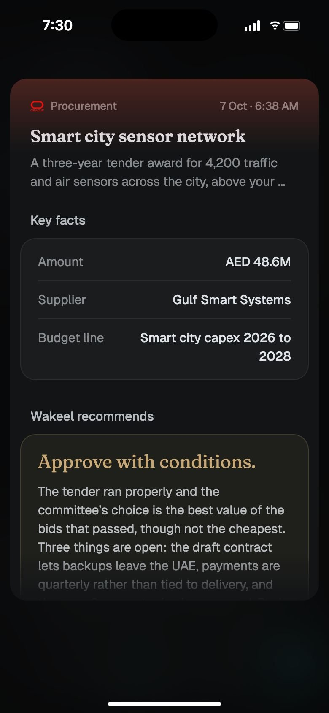
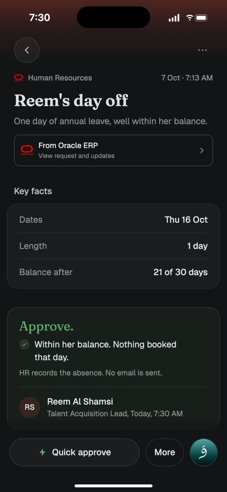
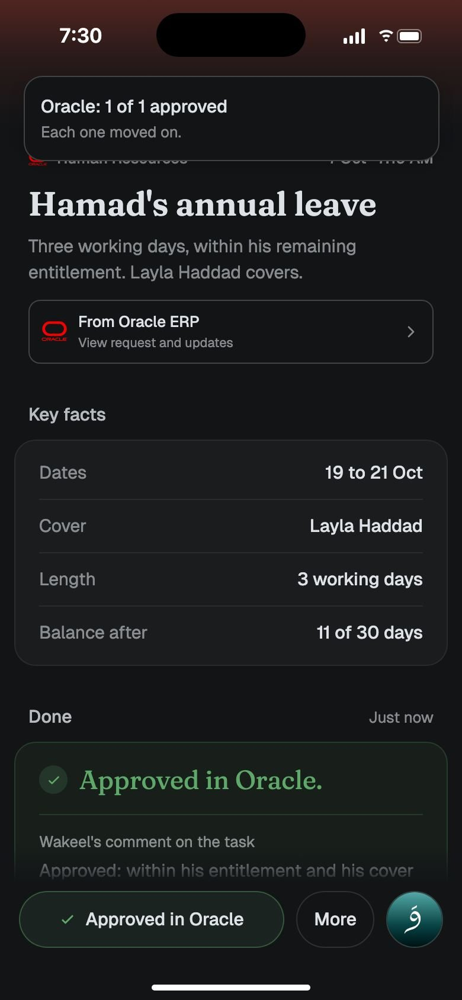
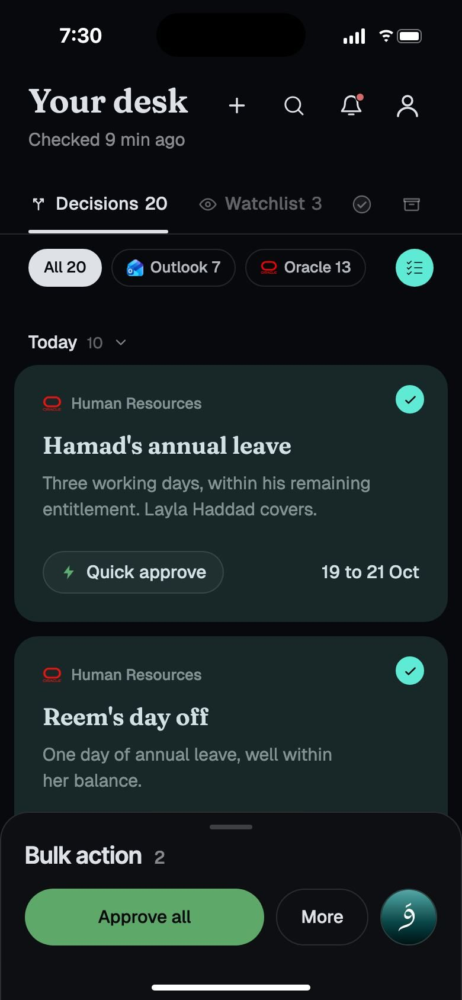
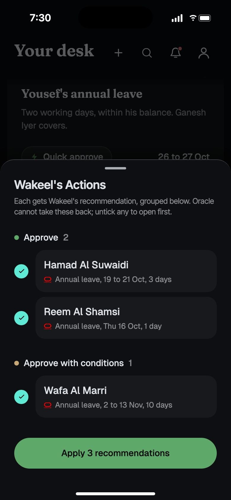
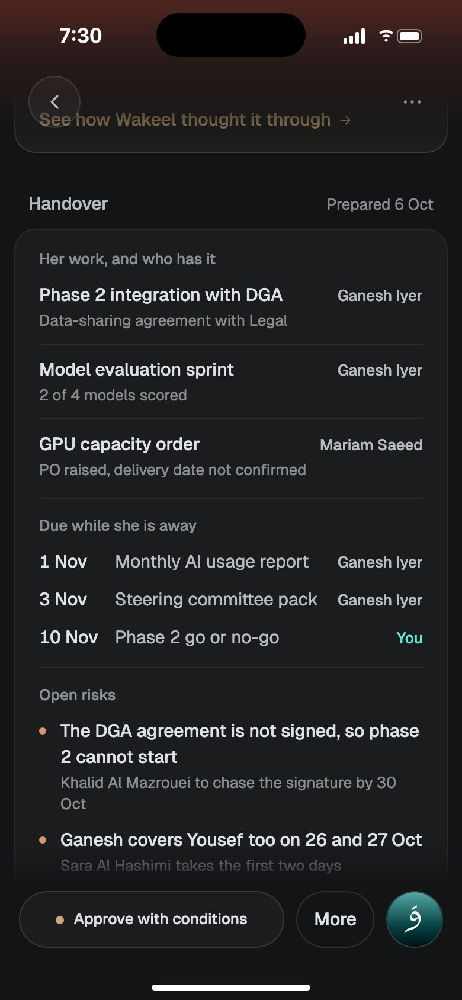
Prototype screens run on sample data. Names and amounts are not real.
Approvals of very different weight looked the same, and the AI doing the work had no face.
A senior decision-maker's day mixes approvals from a one-day leave to a three-year tender. When they all come on the same card with the same button, even the easy ones have to be opened one by one, and the hard ones mean hunting down handover documents, tender scores and yearly budgets to piece together.
Attaching an AI recommendation was not enough. If you cannot see why it was made, you cannot trust it enough to press the button, but laying out the evidence the same way for every request makes even the easy approvals heavy.
Wakeel is now an agent that sorts email overnight, writes drafts and waits for the user's answer. Yet on screen, Wakeel was a flat teal circle in one corner, and it disappeared on decision screens. There was no way to tell whether it was listening, thinking or waiting for you.
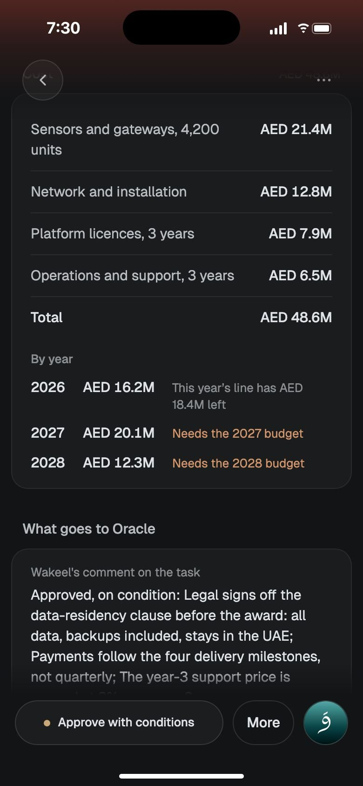
The busiest person makes decisions that cannot be undone.
The most expensive time
The few seconds it takes to open one easy approval add up dozens of times a day, and each review is precious too. So feedback has to come back not as a draft weeks later, but as a screen you can try that same day.
An approval sent does not come back
An approval sent to Oracle cannot be undone. The screen has to leave no room for mistakes, and the way back has to stay visible until the last moment.
People trust AI they can see
Even when a recommendation is right, if people cannot see what was checked and what is still open, they check it again themselves. The same goes for what the AI is doing right now. If it stays invisible, having AI does not reduce the work.
I set the direction and the standard, the agents build, and the review settles it.
- 1
Read reviews as needs
I do not transcribe review notes as they are. I read them for the user needs underneath and split them into tasks. The notes from the first review came down to four needs: tell me what is waiting first, make it quick to read, handle it in the right system, and close the loop. The 9 tasks were solved in that order.
- 2
Options next to today's app
Once I set the direction for a task, an agent builds options on the real app code and lays them next to the original request, how the current app behaves, and the pros and cons. Every option opens on a phone screen and can be compared with today's app step by step.
- 3
Refine through comments, settle in review
I try each option and leave a comment with the spots to fix marked on a screenshot, and the agent starts right away and replies with what it changed. In reviews, we settle things by trying the real app screens together with the decision-maker.
- 4
Bring what is settled together
In one prototype with every settled option switched on, I follow the flow like a user, from the lock screen. Each change of choice leaves a version, and the first review built up 23 versions in eight days.
- 5
Documents development can build from
For each task I write what the user sees, what to build, the data needed, states and exceptions, and the done criteria. They go straight into tickets, and the prototype code goes along as a reference for behaviour.
- 6
Record before calling it done
Before any change is called done, what changed, why and where it came from go into the hub's record. 253 entries built up in five weeks, and 61 of them started from a comment.
From one comment to a revised screen
Below is the comment I left on option A3 of the Oracle approval sheet. The direction was good, but the colour at the top cut off right under the title and was not elegant, so it should fade. The title already said Approve, repeating the button, so it should go. And optional approval steps should be hidden, with a way to open them kept.
Four minutes later the agent confirmed the three changes and started, and fourteen minutes after the comment it posted the revised screen, noting that it had also tidied options A and A2, which share the same sheet. The revised screen goes up in the same place right away, and I try it again and leave the next comment.
- My design comments82, all applied
- Median time to apply10 minutes
- Applied within 15 minutes76%
- Changes that started from a comment61 of 253 records
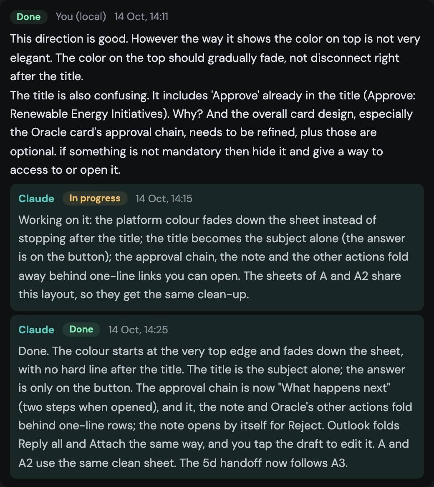
Example: "Oracle approvals look like email replies"
It was one line from the first review. The current app opened the same composer as an Outlook reply even when approving an Oracle purchase request, and the confirmation said "Everyone has been notified". Nothing said the work had moved on in Oracle. From that one line, comments led to 17 options over eight days, and we settled on the last one, A8.
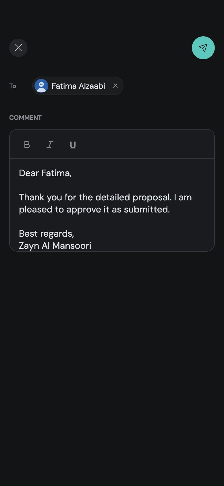
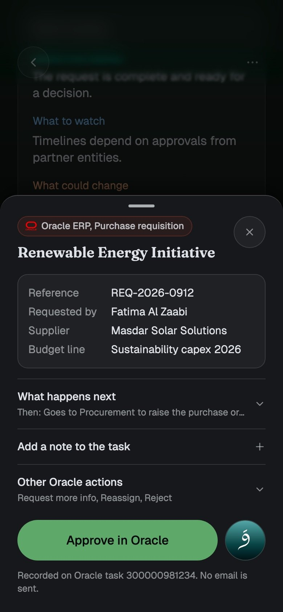
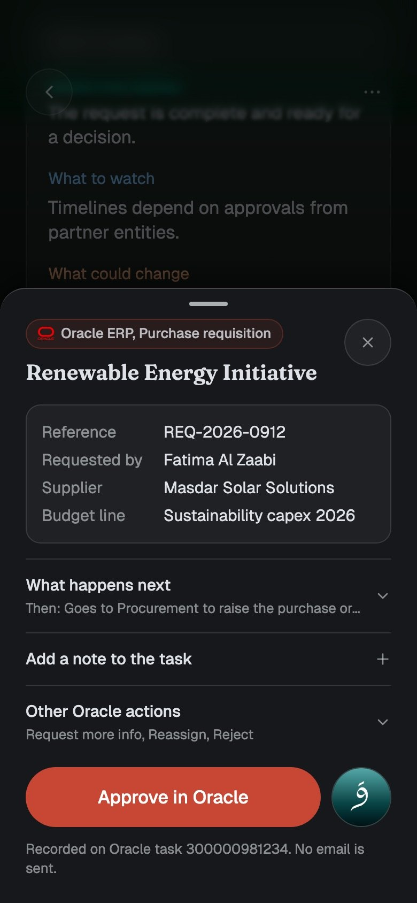
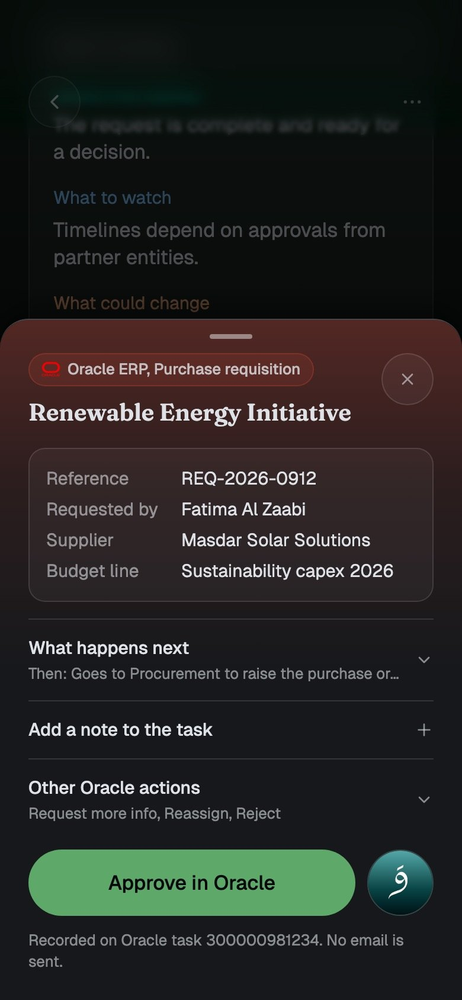
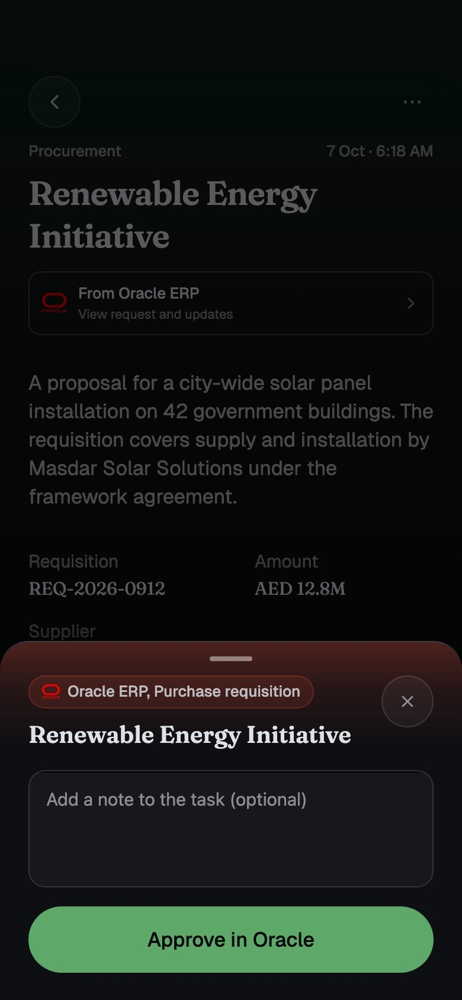
Every option runs on the same app code, and each one notes which comment it came from.
What is settled becomes one prototype and the development documents
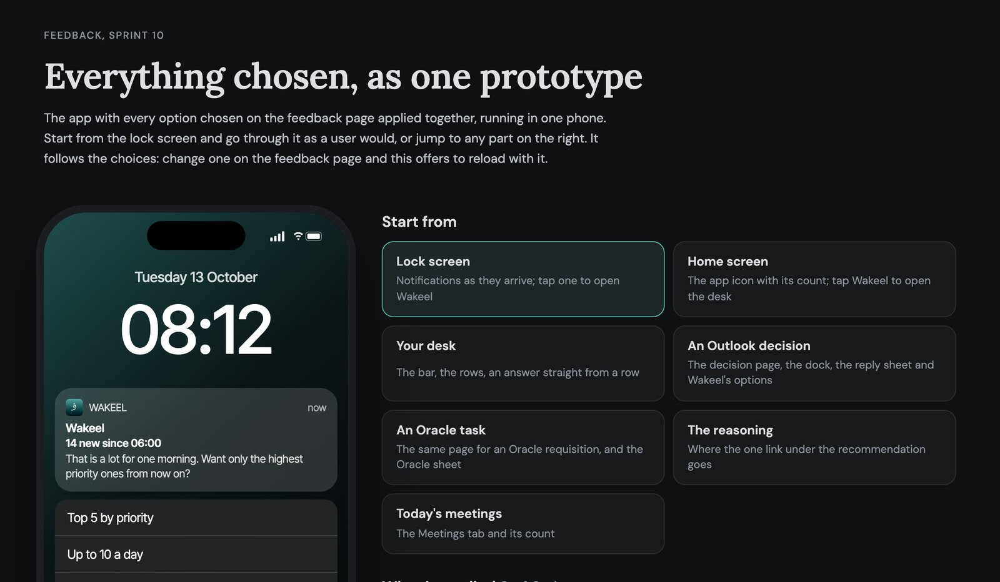
One task in the development documents: the counts on the tab icons
- What the user sees
- Without opening the list, they know how many decisions and meetings are left today. The same numbers sit on the desk and meetings tab icons and on the app icon on the home screen.
- What to build
- Counts on the tab bar, the app icon badge, and the badge value in push for when the app is closed
- Data
- Only totals from the existing lists, with no names or titles
- States and exceptions
- Hidden at 0, 99+ above 99, the last value while loading, mirrored for Arabic
- Done when
- Approving one item lowers the tab, list and app icon counts together, without a refresh
The direction for ERP approvals: right from the desk, each request at its own depth
Each request at its own depth
Requests that are safe to quick-approve get one block. The rest get the recommendation, the checks and what will go to Oracle. Handovers, tenders, multi-year costs and answers other than approve open up to reasoning and conditions.
A preview that separates reading from acting
A long press lifts the page before you lift your finger. The preview has no buttons, so nothing gets approved by accident while reading.
Every action after 5 seconds
The button only shows that the action is in progress, and the alert above holds the seconds left and undo. Several actions stack into one alert.
Several at once only when the answers match
If every selected item has the same answer, approve all. If they differ, review them by group in Wakeel’s Actions and remove what does not belong. Outlook requests that cannot be selected are dimmed and shake gently when tapped.
Finished work shows as a state
The card's button changes to "Approved in Oracle", and the page shows only what was done, where and when, and what will happen next. There is nothing to press.
An open question: the shape of the undo alert
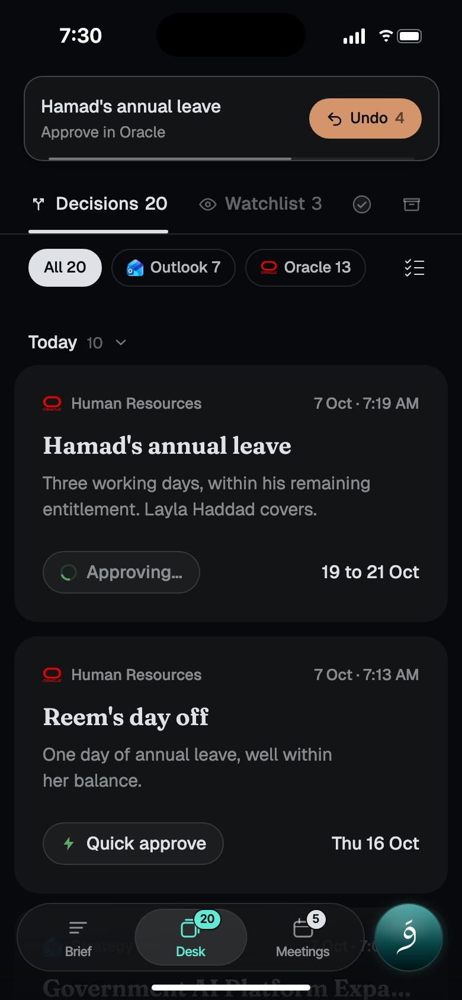
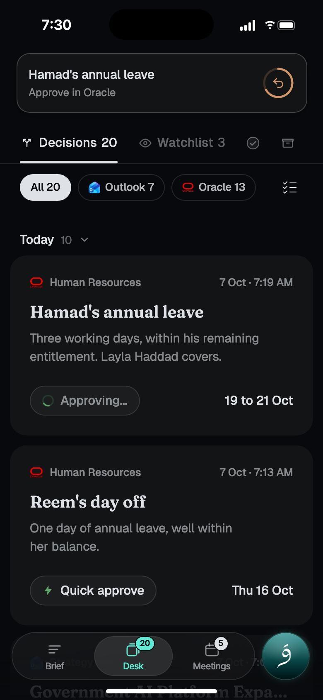
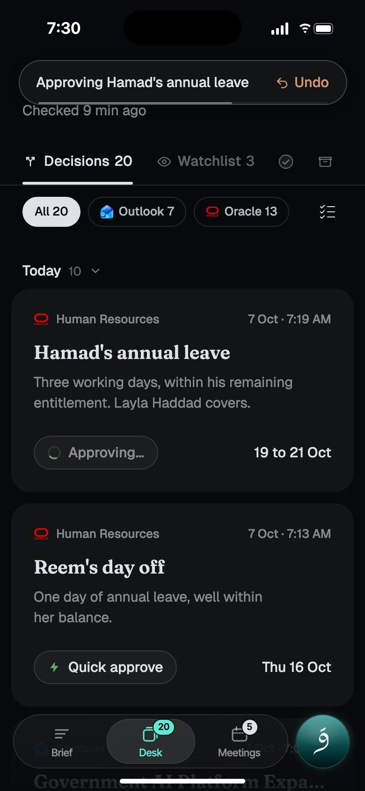
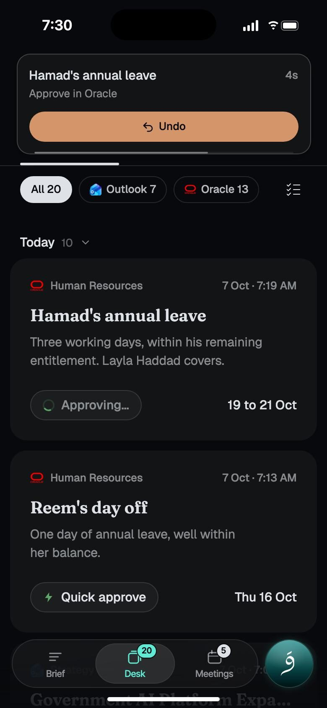
After a comment on 2 November, "Send now" was dropped and the rest laid out four ways. D is the default, and all four are switched on in the same app, to be settled in the next review.
I gave Wakeel a face. One face, on every screen.
On 12 October I started giving a face to Wakeel, which had been a single teal circle in a corner. There were five criteria: a living, three-dimensional form; several states; restraint first, then deep detail; calm enough for senior UAE government officials; and national symbols used sparingly. That day, with the agents, we drew six directions live in the browser and ran each through the same eight states. After narrowing it down to six variations between ink and character, we chose one: Midad (Arabic for "ink"), ink inside glass. The other directions, pearl, sand, seven layers of light and a companion with eyes, were kept as ideas.
Restraint, then detail
Wakeel's screens are full of text. The orb is the one place allowed a visual moment, so it stays small and quiet and reveals more the closer you look.
Always the same face
One orb, one letter. The same material at every size, from the tab bar to notifications.
States you read without a text label
Listening, thinking, working and waiting for you have to look different from one another at 58 points, with no visible text label.
Roots, not decoration
The UAE lives in the material and the name. There are no flags on buttons.
Calm, for senior officials
Nothing flashy or cartoonish. Motion is slow, stops when it is not needed, and becomes a still orb under Reduce Motion.
Midad, eight states
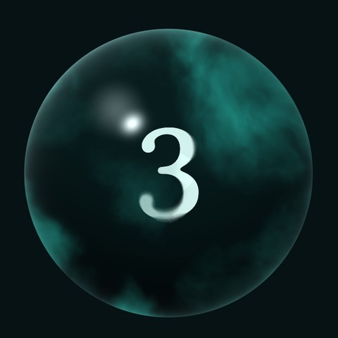
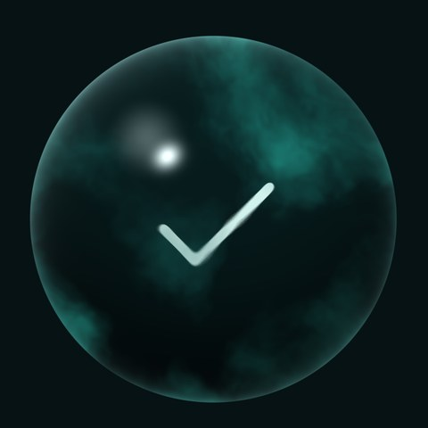
When the letter becomes a number or an iconThe ink lets go of the Arabic letter waw (و) and gathers into the next shape. The count of waiting items, a done mark or an envelope takes the letter's place for a moment, then gives it back.
Orbs drawn live in the hub, captured. When the state changes, the size stays the same, and only the material and motion change.
In the app: never gone, even on decision screens
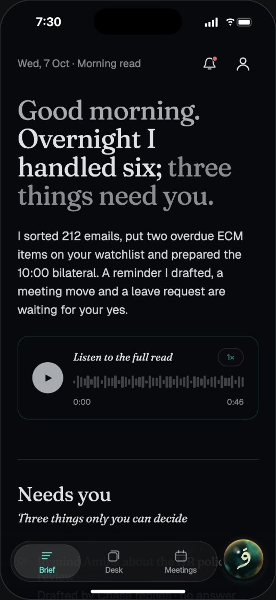
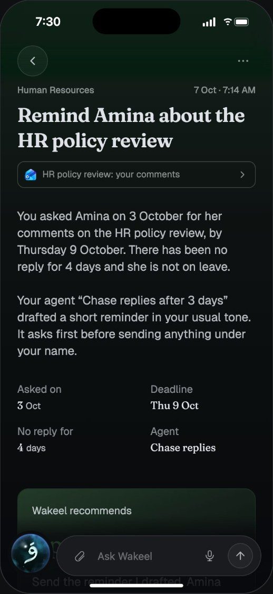
In the live prototype
I turned the version where the orb leads the conversation from the centre of the screen into a prototype that actually runs. Tap to talk, hold to dictate, double-tap for shortcuts. Wakeel opens with one paragraph on what it did overnight, answers a request with a plan of who does what, and brings up what is stuck before asking how to handle it.
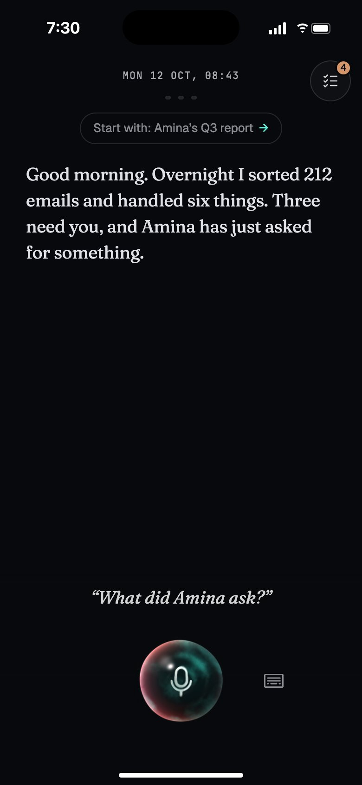
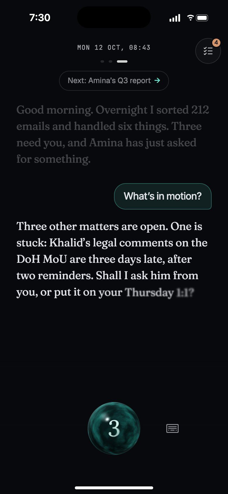
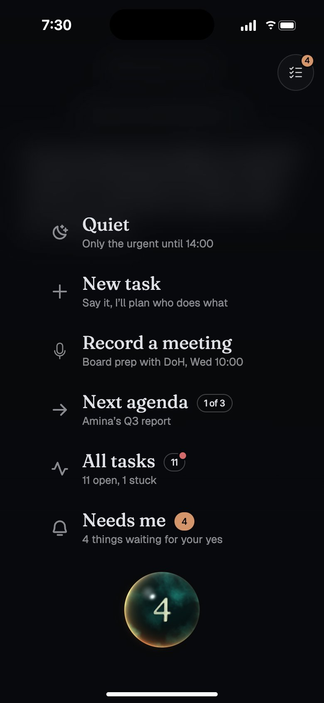
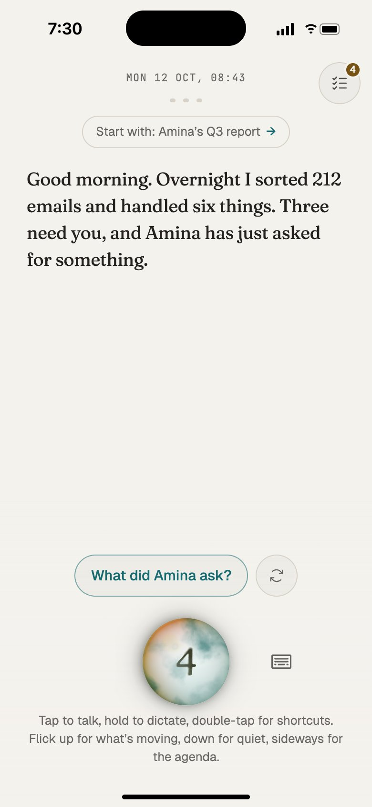
Captured at phone size from the prototype running in the hub. The people and tasks are sample data.
Ten places the orb should be, from first priority
- Tab bar
- Today a flat circle with no motion. It breathes when idle, warms when waiting for you, carries light when agents work, and listens on a long press
- Decision and meeting screens
- Today the orb disappears, leaving only a grey input. The orb takes the spot left of the input
- Ask Wakeel
- Today thinking is shown with sparkles and three dots. The orb thinks and speaks, and each answer gets a small orb
- Second and third priority
- Voice input, the top of the brief, recommendation cards, agents, the lock screen and notifications, the launch screen, offline
Motion tuned by numbers
Eight levels of swirl
How much the ink folds, how coarse its grain is and how fast it flows became three numbers, and I picked from eight levels side by side. The prototype now uses a quiet level.
The orb on light screens
An orb drawn for dark screens looked like a hole on light ones. I compared four options, dark glass, milk glass, clear glass and deep teal, by what each one gains and loses.
One shader, eight states
In the app, a single shader moves smoothly between the eight states as numbers. It stops when the app goes to the background or under Reduce Motion, and becomes a still image where shaders are not available.
The decision flow and face I designed have passed review and are ready to go to development.
Settled so far
- First reviewAll 9 tasks settled, 23 versions
- Oracle approvalsA8, after 17 options
- ERP approvalsRight from the desk, each request at its own depth
- PresenceOne Midad, eight states
- Live appNever touched, with every change behind a flag
Handed to development
- Per taskWhat users see, what to build, data, states and exceptions, done criteria
- Batch action APIAccept first, then results through push and the inbox
- Per decisionWhether quick approve is allowed, checks, depth, Oracle approval order
- OrbOne shader, eight states, one new dependency
- Prototype codeA reference for behaviour, not production code
- Open questionUndo alert A to D, default D
Five things I learned designing the experience of the heaviest decisions with a team of agents
-
01
Design discussions happen on screens built in real code, not in words
Instead of dragging review requests through meeting notes and static screens, I set the direction and had options built on the same code as the live app. Across three reviews we built 94 options and decided by trying them on a phone, and what was settled became both the standard for the next round and the document for the development team.
-
02
When a comment comes back as a screen within minutes, a review becomes a conversation
All 82 of my design comments came back as revised screens, half of them within 10 minutes. Because they came back so fast, I could build and check even the options I doubted. That option A2, which painted the button in Oracle's colour, lost the green of approval became clear only after trying it, not while discussing it.
-
03
The face of an AI is a state, not decoration
More than the orb being beautiful, what mattered was reading, without words, whether it is listening, thinking or waiting for me. The size stays fixed and only the material and motion change, and there is only one orb per screen. For the busiest user, AI should be quiet and clear.
-
04
Time to undo what cannot be undone, and depth in proportion to the weight of the work
Approvals sent to Oracle cannot be undone, so every action waits 5 seconds, with undo in the alert above. A one-day leave gets one block, and a three-year tender opens up to reasoning, conditions and yearly costs, so the depth of the recommendation matches the weight of the work.
-
05
Agents do the making, and I keep the judgement and the standards
Agents build options fast, and many at a time. I decide what to ask, which option meets the standard and what it takes to call something done. Every change is recorded with its reason and source, so even as rounds speed up, the direction holds.